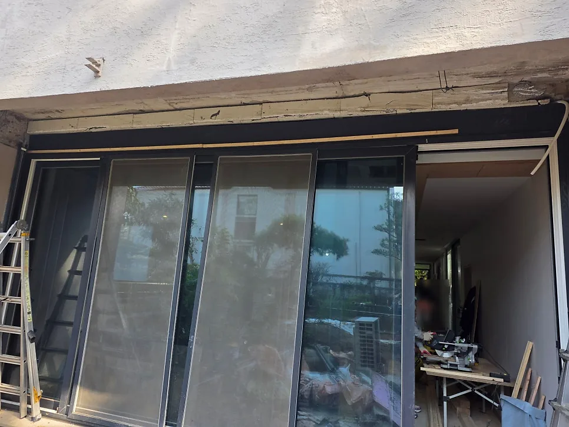

철거
움직이지 않는 투시형 셔터 철거
경기 성남 분당동 빌라
투시형 셔터 철거 · (W)약 5,400 × (H)약 2,700mm
셔터 전체가 꼬이고 모터 선이 끊어져 올리지도 내리지도 못하는 투시형(타공) 셔터였습니다. 풀어서 내릴 수 없어, 위에 매달린 셔터를 잘라 내는 방식으로 철거했습니다.
이 현장은 철거만 했습니다. 철거한 자리에 새 셔터가 필요하면 가이드레일 · 샤프트 · 셔터박스 · 모터 구조를 아는 셔터 업체가 이어서 재시공하는 편이 수월합니다. LS셔터는 철거만도, 철거 뒤 재시공까지도 직접 합니다.
블로그 원문 보기
철거 전 
철거 후